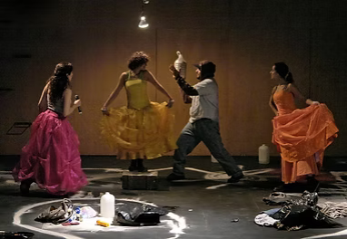

Wednesday, Thursday, and Friday; July 7, 8, and 9 | 8:30pm
TEATRO LÍNEA DE SOMBRA | Mexico City, Mexico
AMARILLO
A Collective Creation | Directed by Jorge A. Vargas
A play that explores the concept of national identity, the connection between the real and the virtual and the relationship between documentary and fiction. An incessant voice streams through the soundtrack, creating an acoustic landscape and signaling identity. (In Spanish)
Carnival Studio Theatre, Adrienne Arsht Center | 1300 Biscayne Boulevard, Miami
TICKETS: 305.949.6722 | 866.949.6722 (toll free) | www.arshtcenter.org